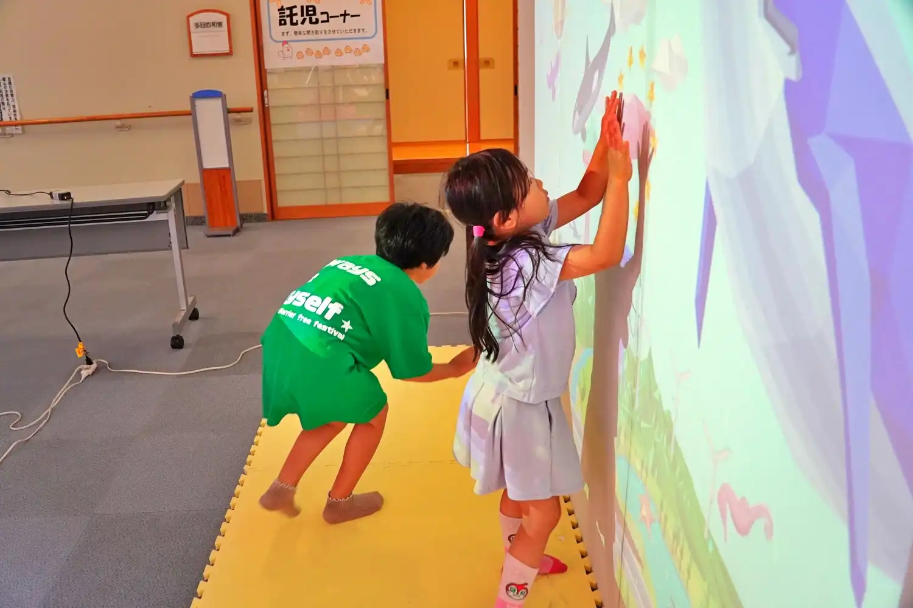
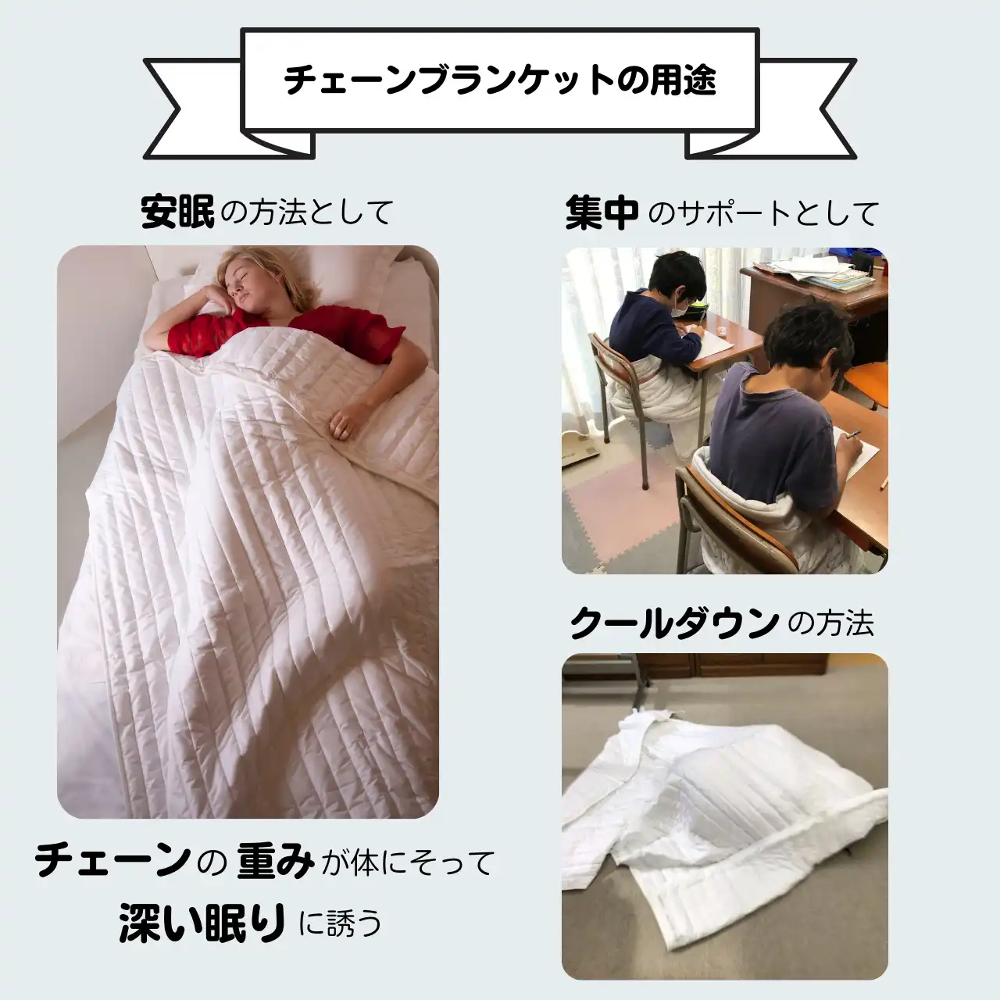

株式会社デジリハ 様

プロジェクターで映した映像を、タッチして遊べます。
アプリがいくつもあって、カスタマイズもできるので、むずかしさはもちろん、手と目のチームワーク、体幹のバランス、まわりの人とのコミュニケーションなど、その子に合わせて訓練に使えます。
機器展でも、たくさんの子どもたちが笑顔で楽しんでいます٩( ᐛ )و
ほかにも、こんなセンサーがありますよ!(下のリンクからどうぞ)
いつもお世話になっているメーカーさんです(順不同)。

プロジェクターで映した映像を、タッチして遊べます。
アプリがいくつもあって、カスタマイズもできるので、むずかしさはもちろん、手と目のチームワーク、体幹のバランス、まわりの人とのコミュニケーションなど、その子に合わせて訓練に使えます。
機器展でも、たくさんの子どもたちが笑顔で楽しんでいます٩( ᐛ )و
ほかにも、こんなセンサーがありますよ!(下のリンクからどうぞ)

チェーンブランケットなど、感覚支援の商品を扱っている会社さんです。
チェーンブランケットは、北欧スウェーデン生まれの「眠れない」「そわそわ落ち着かない」人のための特別な掛け布団。体にそってチェーンがぎゅっと抱きしめるように触れるので、「ホッ」として「ふにゃー」で「ふぅ……」となります。
……何を言っているか、分かりませんよね。
「感覚」は目に見えないし、自分だけが感じるものなので、なかなか分かってもらえないんです。大人でもそうなのだから、子どもさんはもっとだと思います。(決して私の語彙力の問題ではないはず……)
だからこそ「感覚」は大切で、伝わりにくいもの。ぜひ、体験してみてください。
キッズバリアフリーフェスティバルなどにも展示してくださっていて、ホームページからレンタルもできるそうです٩( ᐛ )و
外部のサイトが新しいタブで開きます。